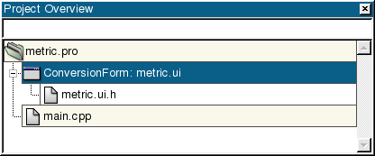
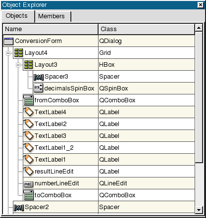
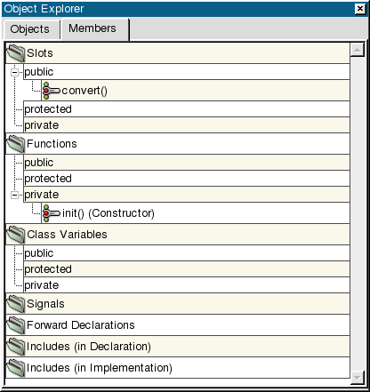
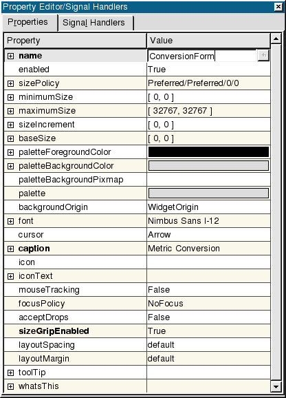
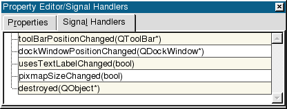
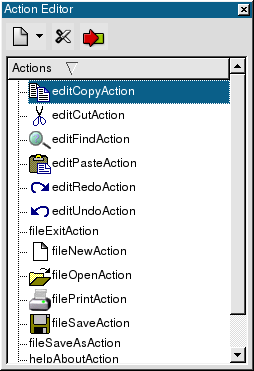

| Home | All Classes | Main Classes | Annotated | Grouped Classes | Functions |
[Prev: Reference: Wizards] [Home] [Next: Reference: The .ui File Format]
By default Qt Designer starts up with three windows on the left hand side. They are the Project Overview Window, the Object Explorer Window, and the Property Editor/Signal Handlers Window. In addition, Qt Designer provides an Action Editor for creating actions for a form's menus and menu items. This chapter explains each window in detail.
This window lists all the files associated with the project. To open a form or file single click it in the Files list. To rapidly switch between forms and files, type the name of the file in the line edit above the files list and Qt Designer will perform an incremental search to show any matching files or forms.

Project Overview Window
Right-click a file (or the project) to get a context menu of options, for example, 'Open form' or 'Remove form from project'.
The Object Explorer window lists the current form's widgets and slots. The window contains two tabs, the Objects tab and the Members tab.

Objects Tab
Click the Widgets tab to view all the widgets for the current form. The widgets are listed by name and class. Click a widget in the list to highlight it in the corresponding form.

Members Tab
Click the Members tab to view the current form's slots, forward declarations, includes, and class variables. The Members tab uses a tree view to display its information. Items which have a '+' sign have sub-items which are revealed by clicking the '+'. Right click any item in the tree view to popup a context menu.
To edit or add slots, right click the Slots folder and select 'Edit' to invoke the Edit Slots Dialog. Right click the Public, Protected, or Private subdirectories and click 'New' to invoke the Edit Slots Dialog. Right click a slot in the list to invoke a menu with additional options for the slot. To add new slots, choose 'New' from the menu, which invokes the Edit Slots Dialog. To change the properties of the selected slot, choose 'Properties' which invokes the Edit Slots Dialog. To open the C++ editor and jump to the implementation of the selected slot, choose 'Goto Implementation'. To remove the selected slot, choose 'Delete'. Signals can be added or deleted in the same way as slots.
Right click 'Forward Declarations', 'Includes (in declaration)', 'Class Variables', and 'Includes (in implementation)' to invoke a context menu with the 'new' or 'edit' options. Choose 'New' to invoke a line edit for typing a declaration, variable, or include. Right click 'Forward Declarations' and choose 'Edit' to invoke the Edit Forward Declarations Dialog. Right click 'Includes (in declaration)' and choose'Edit' to invoke the Edit Includes (in Declaration) Dialog. Right click 'Class variables' and choose 'Edit' to invoke the Edit Class Variables Dialog. Right click 'Includes (in Implementation)' and choose 'Edit' to invoke the Edit Includes (in Implementation) Dialog.
Click the Property Editor/Signal Handlers window to view and change the properties of forms, widgets and menus. This window has a 'Properties' tab and a 'Signal Handlers' tab.

Properties Tab
Click the 'Properties' tab to change the appearance and behaviour of the selected widget. (For menus, click the menu bar to show the menu item properties in the Property Editor.) The Property Editor has two columns, the Property column which lists property names and the Value column which lists the values. Click the column headers to sort the properties or values. Some property names have a plus sign '+' in a square to their left; this signifies that the property name is the collective name for a set of related properties.
Some properties have simple values, for example, the name property has a text value, the width property (within minimumSize for example) has a numeric value. To change a text value click the existing text and type in your new text. To change a numeric value click the value and either type in a new number, or use the spin buttons to increase or decrease the existing number until it reaches the value you want. Some properties have a fixed list of values, for example the mouseTracking property is boolean and can take the values True or False. The cursor property also has a fixed list of values. If you click the cursor property or the mouseTracking property the value will be shown in a drop down combobox; click the down arrow to see what values are available.
Some properties have complex sets of values; for example the font property. If you click the font property an ellipsis button (...) will appear; click this button and a Select Font dialog will pop up which you can use to change any of the font settings. Other properties have ellipsis buttons which lead to different dialogs depending on what settings the property can have. For example, if you have a lot of text to enter for a text property you could click the ellipsis button to invoke the multi-line text editor dialog. The names of properties which have changed are shown in bold. If you've changed a property but want to revert it to its default value click the property's value and then click the red 'X' button to the right of the value. Some properties have an initial value, e.g. 'TextEdit1', but no default value; if you revert a property that has an initial value but no default value (by clicking the red 'X') the value will become empty unless the property, e.g. name, is not allowed to be empty.
The property editor fully supports Undo and Redo (Ctrl+Z and Ctrl+Y, also available from the Edit menu).

Signal Handlers Tab
Click the 'Signal Handlers' tab to view or create the connections between signals of widgets and custom slots of the form.
The Action Editor window is used to create actions that the user initiates through the user interface, for example, saving or printing a file. To access the Action Editor window, click Window|Views|Action Editor when a main window is active.

Action Editor
The Action Editor contains three functions on its menu bar: create, delete, and connect. It also contains a listview that lists the existing actions.
To create a new action, click the arrow on the Create a New Action icon on the menu bar. Choose to create a new action, a new action group, or a new dropdown action group. You can also create actions by right-clicking an existing action in the Action Editor listview and selecting the type of action you want to create from the popup menu.
To delete an action from the listview, click the action you want to delete from the list, and then click Delete Current Action on the menu bar. You can also delete actions by right-clicking an existing action and in the Action Editor listview and then clicking Delete Action from the popup menu.
To connect an action to a slot, click an action on the listview and then click the Connect icon on the menu bar to invoke the View and Edit Connections dialog. You can also connect an action to a slot by right-clicking an existing action and in the Action Editor listview and then clicking Connect Action from the popup menu.
[Prev: Reference: Wizards] [Home] [Next: Reference: The .ui File Format]
| Copyright © 2007 Trolltech | Trademarks | Qt 3.3.8
|